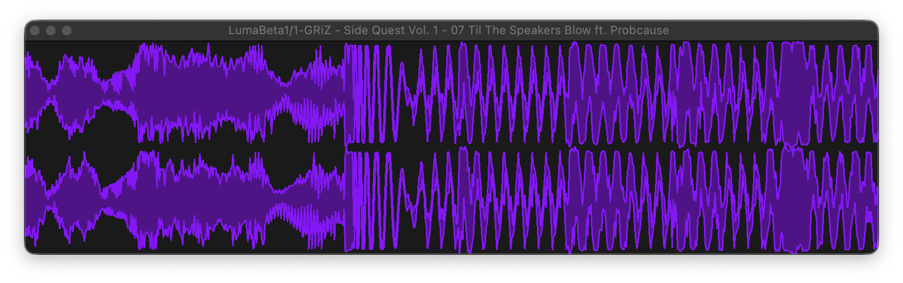
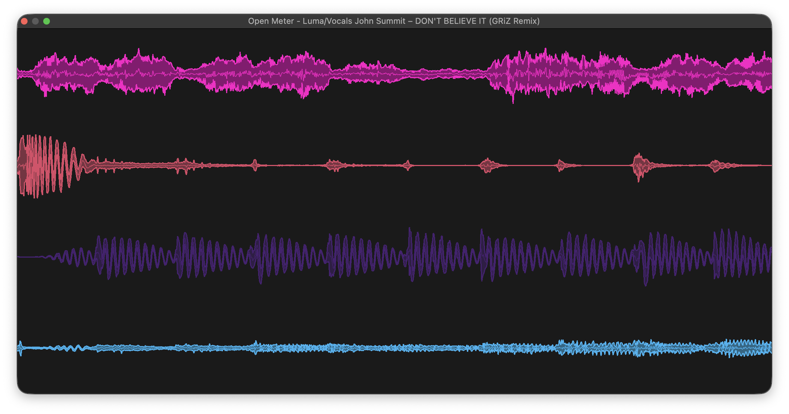
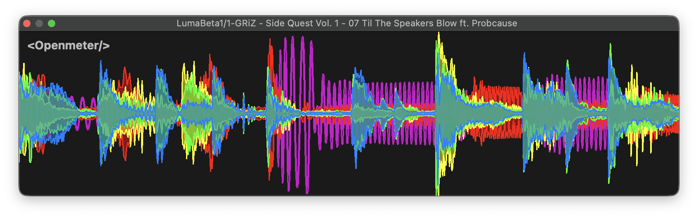
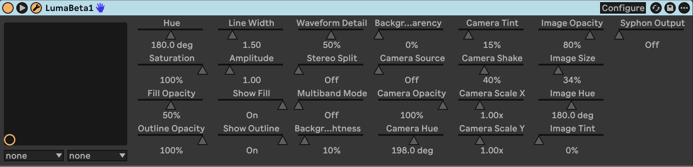
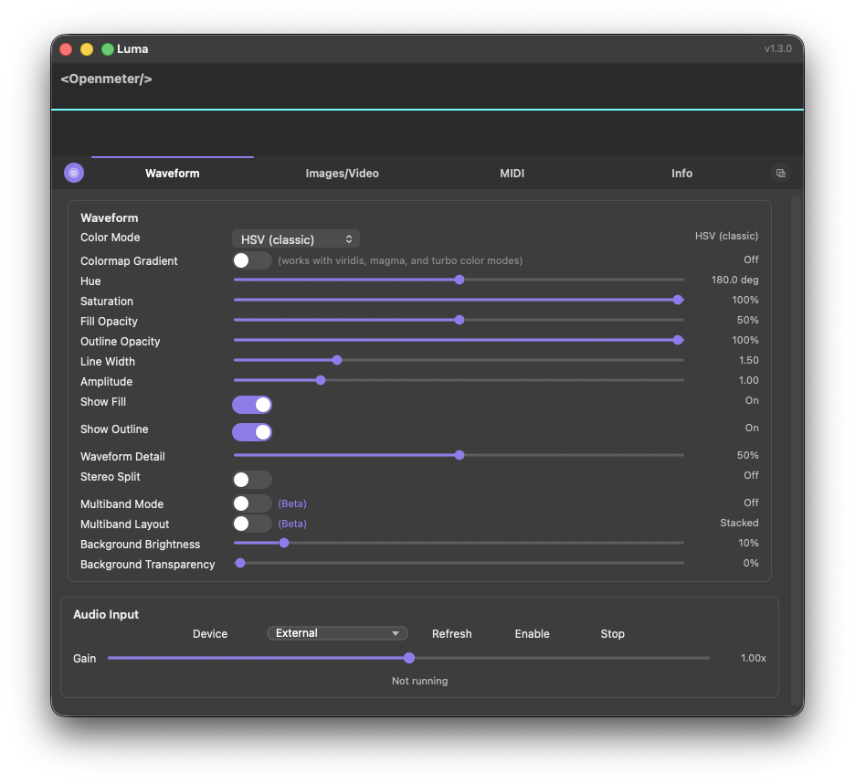
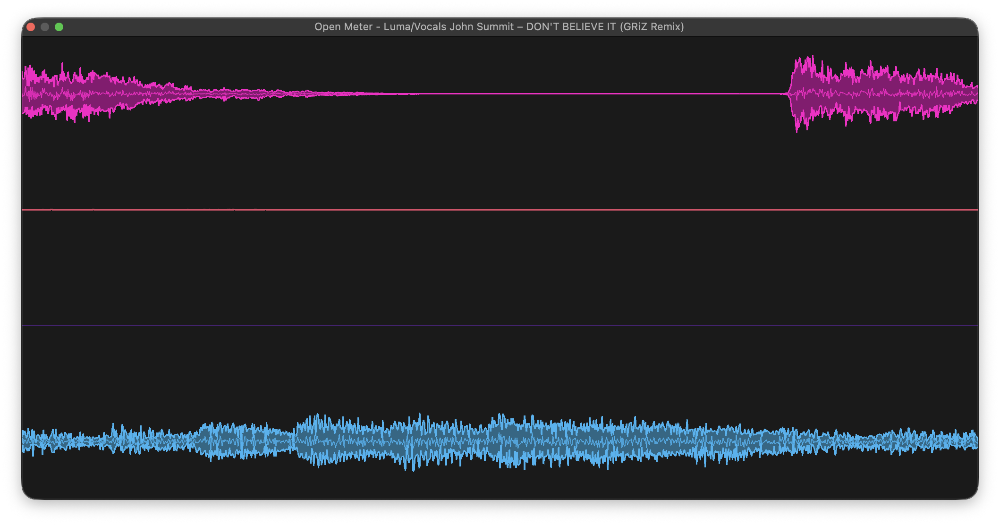
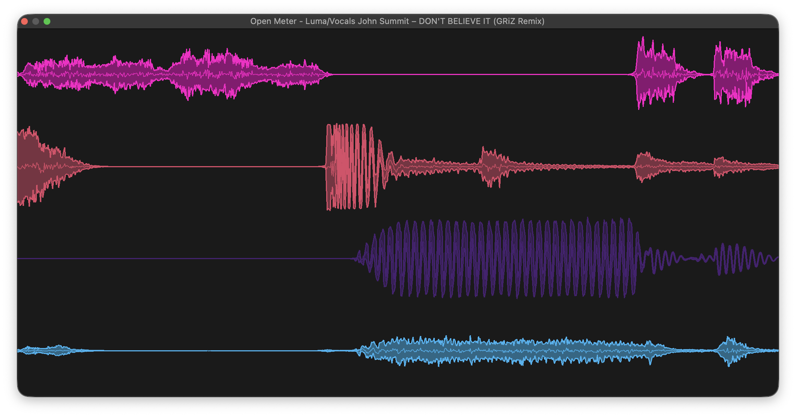
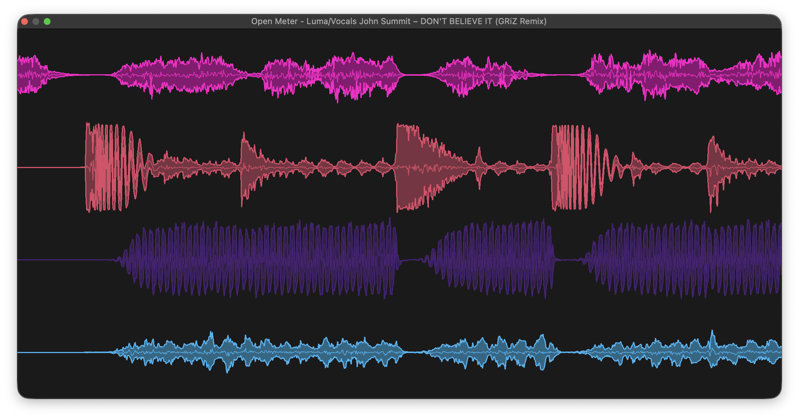
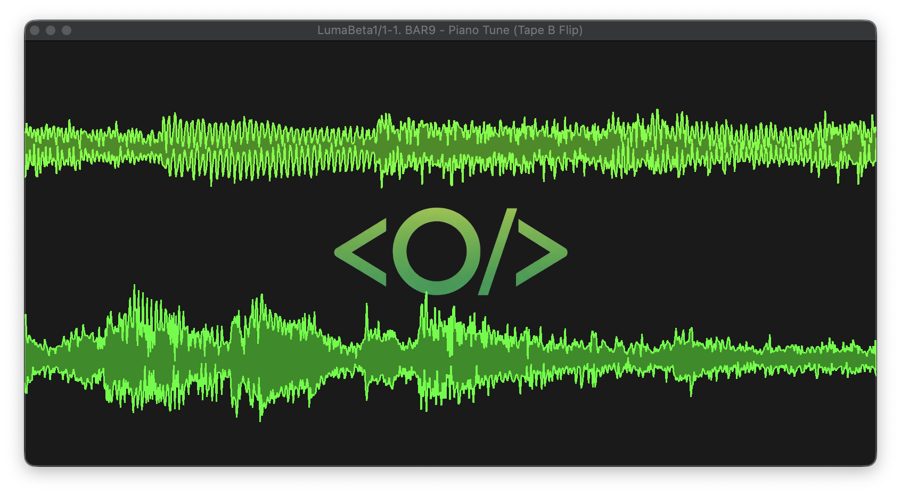
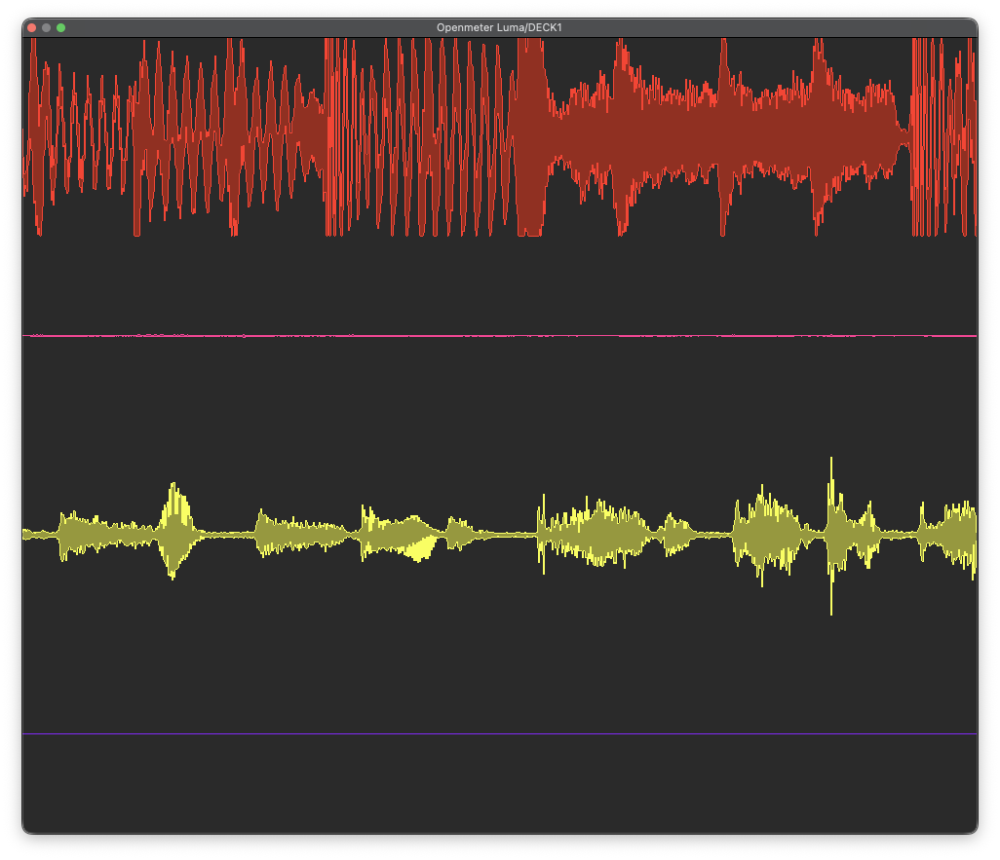

Stereo split
See both sides.
Give the left and right channels their own lanes. Stereo split is available when five-band mode is off.
LUMA turns live audio into a waveform you can shape, color, and put on screen. Made for the studio. Ready for the clip.
Turn your session into a visual worth sharing.
The demo is a screen-only VST3 visualizer for Ableton Live. The paid release also includes the standalone macOS client. Audio is designed to pass through unchanged; the live display runs only while its editor is open.

Give the left and right channels their own lanes. Stereo split is available when five-band mode is off.

Add LUMA to each track, start playback, and keep the first active instance's MASTER editor open. Every lane keeps its own visual settings.

Split audio into five filtered bands from sub to high. Give each a color, then stack or layer them; multiband takes precedence over stereo split.
Fine-tune the VST3 demo, then get the standalone macOS client with the paid release.

Automate color, amplitude, fill, outline, line width, and detail per instance. Add camera or image layers with opacity and tint controls; camera use needs macOS permission. Optional telemetry shows render status and FPS.

The paid release includes the native standalone client. Use any Core Audio input—your microphone, interface, or loopback source—and keep the waveform on screen.
Choose HSV, Viridis, Magma, or Turbo. Switch on gradient coloring to shift the palette across the waveform.





